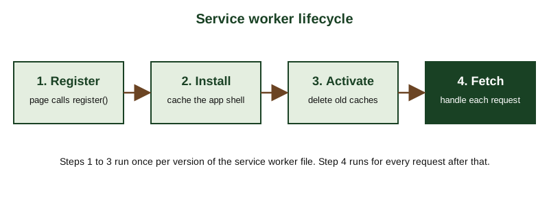

Building a PWA
Turning a website into a PWA takes four steps: add a manifest, register a service worker, choose how files are cached, and test the result. This page walks through each step. The code samples are shown as text for study and are not part of this site.
Choosing a caching strategy
A caching strategy is a rule that tells the service worker where to look first for a file. Different kinds of files call for different rules.
| Strategy | How it works | Good for |
|---|---|---|
| Cache first | Look in the cache. Use the network only if the file is missing. | Images, fonts, and other files that rarely change |
| Network first | Try the network. Use the cache if the network fails. | Pages and data that should be as current as possible |
| Stale while revalidate | Show the cached file now, then update the cache from the network. | Content where a slightly old copy is acceptable |
| Network only | Always use the network and never store the response. | Payments and other requests that must not be cached |
| Cache only | Always use the cache and never contact the network. | Files saved during install that never change |
The service worker lifecycle
A service worker moves through set stages. Each stage has an event that developers can listen for in the service worker file.

- Register. The page tells the browser where the service worker file is.
- Install. The browser downloads the file and the worker saves the app shell to the cache.
- Activate. The worker takes control and removes caches from older versions.
- Fetch. The worker answers every request the page makes.
A minimal service worker
First, the page registers the worker. This script goes in the HTML file.
<script>
// Register only if the browser supports service workers
if ('serviceWorker' in navigator) {
navigator.serviceWorker.register('/sw.js');
}
</script>
Next, the worker file sw.js caches the app shell and uses a
cache first strategy.
const CACHE_NAME = 'app-shell-v1';
const APP_SHELL = ['/', '/index.html', '/styles.css', '/app.js'];
// Install: save the app shell
self.addEventListener('install', (event) => {
event.waitUntil(
caches.open(CACHE_NAME).then((cache) => cache.addAll(APP_SHELL))
);
});
// Activate: delete caches from older versions
self.addEventListener('activate', (event) => {
event.waitUntil(
caches.keys().then((names) =>
Promise.all(
names.filter((name) => name !== CACHE_NAME)
.map((name) => caches.delete(name))
)
)
);
});
// Fetch: answer from the cache, fall back to the network
self.addEventListener('fetch', (event) => {
event.respondWith(
caches.match(event.request).then((cached) => cached || fetch(event.request))
);
});Updating a service worker
When you change your cached files, also change the cache name in the
service worker, for example from app-shell-v1 to
app-shell-v2. The activate step then deletes the old caches,
so visitors get the new files.
Testing a PWA
Chrome DevTools has an Application panel for checking each part of a PWA.
- Open the site in Chrome and press F12 to open DevTools.
- Select the Application tab.
- Open Manifest to see the parsed manifest, its icons, and any errors.
- Open Service workers to see whether the worker is active.
- Open Cache storage to see which files were saved.
- On the Service workers screen, tick Offline and reload to confirm the app still loads.
Lighthouse, the audit tool built into Chrome, is also useful for checking speed, accessibility, and best practices. Recent versions of Lighthouse no longer include a separate PWA score, so the Application panel is the main way to check installability.